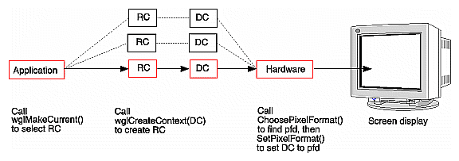

Any OpenGL program for Windows has to take care of some window-dependent setup. There are several ways this setup can be done, for example, using the GLUT library or using GDI and WGL directly. This guide focuses on using the Windows OpenGL API directly.
This section first lists a Simple Windows Example Program, then uses the example to illustrate what an OpenGL program under Windows usually has to do:
This section lists a simple example program, which is also included with this release. You can examine it now or go on to the next section, "Setting Up and Creating the GDI Window."
Example 1-1 : OpenGL in a Windows Environment
#include <windows.h>
#include <GL/gl.h>
char *className = "OpenGL";
char *windowName = "OpenGL Cube";
int winX = 0, winY = 0;
int winWidth = 300, winHeight = 300;
HDC hDC;
HGLRC hGLRC;
HPALETTE hPalette;
void
init(void)
{
/* set viewing projection */
glMatrixMode(GL_PROJECTION);
glFrustum(-0.5F, 0.5F, -0.5F, 0.5F, 1.0F, 3.0F);
/* position viewer */
glMatrixMode(GL_MODELVIEW);
glTranslatef(0.0F, 0.0F, -2.0F);
/* position object */
glRotatef(30.0F, 1.0F, 0.0F, 0.0F);
glRotatef(30.0F, 0.0F, 1.0F, 0.0F);
glEnable(GL_DEPTH_TEST);
glEnable(GL_LIGHTING);
glEnable(GL_LIGHT0);
}
void
redraw(void)
{
/* clear color and depth buffers */
glClear(GL_COLOR_BUFFER_BIT | GL_DEPTH_BUFFER_BIT);
/* draw six faces of a cube */
glBegin(GL_QUADS);
glNormal3f( 0.0F, 0.0F, 1.0F);
glVertex3f( 0.5F, 0.5F, 0.5F); glVertex3f(-0.5F, 0.5F, 0.5F);
glVertex3f(-0.5F,-0.5F, 0.5F); glVertex3f( 0.5F,-0.5F, 0.5F);
glNormal3f( 0.0F, 0.0F,-1.0F);
glVertex3f(-0.5F,-0.5F,-0.5F); glVertex3f(-0.5F, 0.5F,-0.5F);
glVertex3f( 0.5F, 0.5F,-0.5F); glVertex3f( 0.5F,-0.5F,-0.5F);
glNormal3f( 0.0F, 1.0F, 0.0F);
glVertex3f( 0.5F, 0.5F, 0.5F); glVertex3f( 0.5F, 0.5F,-0.5F);
glVertex3f(-0.5F, 0.5F,-0.5F); glVertex3f(-0.5F, 0.5F, 0.5F);
glNormal3f( 0.0F,-1.0F, 0.0F);
glVertex3f(-0.5F,-0.5F,-0.5F); glVertex3f( 0.5F,-0.5F,-0.5F);
glVertex3f( 0.5F,-0.5F, 0.5F); glVertex3f(-0.5F,-0.5F, 0.5F);
glNormal3f( 1.0F, 0.0F, 0.0F);
glVertex3f( 0.5F, 0.5F, 0.5F); glVertex3f( 0.5F,-0.5F, 0.5F);
glVertex3f( 0.5F,-0.5F,-0.5F); glVertex3f( 0.5F, 0.5F,-0.5F);
glNormal3f(-1.0F, 0.0F, 0.0F);
glVertex3f(-0.5F,-0.5F,-0.5F); glVertex3f(-0.5F,-0.5F, 0.5F);
glVertex3f(-0.5F, 0.5F, 0.5F); glVertex3f(-0.5F, 0.5F,-0.5F);
glEnd();
SwapBuffers(hDC);
}
void
resize(void)
{
/* set viewport to cover the window */
glViewport(0, 0, winWidth, winHeight);
}
void
setupPixelFormat(HDC hDC)
{
PIXELFORMATDESCRIPTOR pfd = {
sizeof(PIXELFORMATDESCRIPTOR), /* size */
1, /* version */
PFD_SUPPORT_OPENGL |
PFD_DRAW_TO_WINDOW |
PFD_DOUBLEBUFFER, /* support double-buffering */
PFD_TYPE_RGBA, /* color type */
16, /* prefered color depth */
0, 0, 0, 0, 0, 0, /* color bits (ignored) */
0, /* no alpha buffer */
0, /* alpha bits (ignored) */
0, /* no accumulation buffer */
0, 0, 0, 0, /* accum bits (ignored) */
16, /* depth buffer */
0, /* no stencil buffer */
0, /* no auxiliary buffers */
PFD_MAIN_PLANE, /* main layer */
0, /* reserved */
0, 0, 0, /* no layer, visible, damage masks */
};
int pixelFormat;
pixelFormat = ChoosePixelFormat(hDC, &pfd);
if (pixelFormat == 0) {
MessageBox(WindowFromDC(hDC), "ChoosePixelFormat failed.", "Error",
MB_ICONERROR | MB_OK);
exit(1);
}
if (SetPixelFormat(hDC, pixelFormat, &pfd) != TRUE) {
MessageBox(WindowFromDC(hDC), "SetPixelFormat failed.", "Error",
MB_ICONERROR | MB_OK);
exit(1);
}
}
void
setupPalette(HDC hDC)
{
int pixelFormat = GetPixelFormat(hDC);
PIXELFORMATDESCRIPTOR pfd;
LOGPALETTE* pPal;
int paletteSize;
DescribePixelFormat(hDC, pixelFormat, sizeof(PIXELFORMATDESCRIPTOR), &pfd);
if (pfd.dwFlags & PFD_NEED_PALETTE) {
paletteSize = 1 << pfd.cColorBits;
} else {
return;
}
pPal = (LOGPALETTE*)
malloc(sizeof(LOGPALETTE) + paletteSize * sizeof(PALETTEENTRY));
pPal->palVersion = 0x300;
pPal->palNumEntries = paletteSize;
/* build a simple RGB color palette */
{
int redMask = (1 << pfd.cRedBits) - 1;
int greenMask = (1 << pfd.cGreenBits) - 1;
int blueMask = (1 << pfd.cBlueBits) - 1;
int i;
for (i=0; i<paletteSize; ++i) {
pPal->palPalEntry[i].peRed =
(((i >> pfd.cRedShift) & redMask) * 255) / redMask;
pPal->palPalEntry[i].peGreen =
(((i >> pfd.cGreenShift) & greenMask) * 255) / greenMask;
pPal->palPalEntry[i].peBlue =
(((i >> pfd.cBlueShift) & blueMask) * 255) / blueMask;
pPal->palPalEntry[i].peFlags = 0;
}
}
hPalette = CreatePalette(pPal);
free(pPal);
if (hPalette) {
SelectPalette(hDC, hPalette, FALSE);
RealizePalette(hDC);
}
}
LRESULT APIENTRY
WndProc(
HWND hWnd,
UINT message,
WPARAM wParam,
LPARAM lParam)
{
switch (message) {
case WM_CREATE:
/* initialize OpenGL rendering */
hDC = GetDC(hWnd);
setupPixelFormat(hDC);
setupPalette(hDC);
hGLRC = wglCreateContext(hDC);
wglMakeCurrent(hDC, hGLRC);
init();
return 0;
case WM_DESTROY:
/* finish OpenGL rendering */
if (hGLRC) {
wglMakeCurrent(NULL, NULL);
wglDeleteContext(hGLRC);
}
if (hPalette) {
DeleteObject(hPalette);
}
ReleaseDC(hWnd, hDC);
PostQuitMessage(0);
return 0;
case WM_SIZE:
/* track window size changes */
if (hGLRC) {
winWidth = (int) LOWORD(lParam);
winHeight = (int) HIWORD(lParam);
resize();
return 0;
}
case WM_PALETTECHANGED:
/* realize palette if this is *not* the current window */
if (hGLRC && hPalette && (HWND) wParam != hWnd) {
UnrealizeObject(hPalette);
SelectPalette(hDC, hPalette, FALSE);
RealizePalette(hDC);
redraw();
break;
}
break;
case WM_QUERYNEWPALETTE:
/* realize palette if this is the current window */
if (hGLRC && hPalette) {
UnrealizeObject(hPalette);
SelectPalette(hDC, hPalette, FALSE);
RealizePalette(hDC);
redraw();
return TRUE;
}
break;
case WM_PAINT:
{
PAINTSTRUCT ps;
BeginPaint(hWnd, &ps);
if (hGLRC) {
redraw();
}
EndPaint(hWnd, &ps);
return 0;
}
break;
case WM_CHAR:
/* handle keyboard input */
switch ((int)wParam) {
case VK_ESCAPE:
DestroyWindow(hWnd);
return 0;
default:
break;
}
break;
default:
break;
}
return DefWindowProc(hWnd, message, wParam, lParam);
}
int APIENTRY
WinMain(
HINSTANCE hCurrentInst,
HINSTANCE hPreviousInst,
LPSTR lpszCmdLine,
int nCmdShow)
{
WNDCLASS wndClass;
HWND hWnd;
MSG msg;
/* register window class */
wndClass.style = CS_OWNDC | CS_HREDRAW | CS_VREDRAW;
wndClass.lpfnWndProc = WndProc;
wndClass.cbClsExtra = 0;
wndClass.cbWndExtra = 0;
wndClass.hInstance = hCurrentInst;
wndClass.hIcon = LoadIcon(NULL, IDI_APPLICATION);
wndClass.hCursor = LoadCursor(NULL, IDC_ARROW);
wndClass.hbrBackground = GetStockObject(BLACK_BRUSH);
wndClass.lpszMenuName = NULL;
wndClass.lpszClassName = className;
RegisterClass(&wndClass);
/* create window */
hWnd = CreateWindow(
className, windowName,
WS_OVERLAPPEDWINDOW | WS_CLIPCHILDREN | WS_CLIPSIBLINGS,
winX, winY, winWidth, winHeight,
NULL, NULL, hCurrentInst, NULL);
/* display window */
ShowWindow(hWnd, nCmdShow);
UpdateWindow(hWnd);
/* process messages */
while (GetMessage(&msg, NULL, 0, 0) == TRUE) {
TranslateMessage(&msg);
DispatchMessage(&msg);
}
return msg.wParam;
In the WinMain() function, the program defines and registers a window class winClass, creates the window with the class as a parent, and adds menus if desired.
/* define and register the window class */
winClass.style = CS_OWNDC | CS_HREDRAW | CS_VREDRAW;
winClass lpfnWndProc = WndProc;
...
RegisterClass(&winClass);
/* create window */
hWind = CreateWindow(className,
winName,
...
/* display window */
The window's event callback routine is established during the process of defining the window.
The event loop at the end of WinMain() processes events. It retrieves all the events that are defined in WinProc().
A program that renders OpenGL in a Windows environment must take care of the following requirements, discussed in these sections:
The WM_CREATE method that's part of WinProc() first retrieves and sets up the device context by calling GetDC() and SetupDC():
hDC = GetDC(hWin); SetupDC(hDC);
The SetupDC() function first defines a PIXELFORMATDESCRIPTOR (pfd) which specifies the capabilities of the window.
PIXELFORMATDESCRIPTOR pfd = {
sizeof(PIXELFORMATDESCRIPTOR), /* size of this pfd */
1, /* version num */
PFD_SUPPORT_OPENGL |
PFD_DRAW_TO_WINDOW | /* window types */
PFD_DOUBLEBUFFER,
PFD_TYPE_RGBA, /* RGBA type */
...
To make the window capable of rendering OpenGL, you must include the line PFD_SUPPORT_OPENGL.
After the pfd has been defined, SetupDC() calls ChoosePixelFormat() to find out if a pfd exists that has the required capabilities. If one does exist, SetPixelFormat() then sets the pixel format for the DC.
pixelFormat = ChoosePixelFormat(hDC, &pfd);
...
if (SetPixelFormat(hDC, pixelFormat, &pfd) != TRUE) {
Next, the method has to create a rendering context for the pixel format and make this rendering context current. Instead of interacting with a window directly, OpenGL always renders into the current rendering context. Only the part of the program that determines the current context is window-system dependent.
hGLRC = wglCreatContext (hDC); wglMakeCurrent(hDC, hGLRC);
wglCreateContext() creates a rendering context for use with OpenGL. If wglCreateContext() succeeds, it returns a handle to a rendering context (hGLRC). If it fails, it returns NULL.
The hardware can support multiple pixel formats, for example, 8-bit or 16-bit RGB or color index. An application can therefore create a different DC for each available pixel format. After that, the application must associate a rendering context (RC) with each DC by calling wglCreateContext(). To determine where rendering actually goes, the application then calls wglMakeCurrent() with the desired RC.
If wglMakeCurrent() succeeds, it returns TRUE. If it fails, it returns FALSE. wglMakeCurrent() fails if either of the handles passed to it is invalid or if the rendering context that is to become current is presently current for another thread.
An application can bind to a different RC at any time using wglMakeCurrent() again. In addition, an application can free an RC by binding to a NULL context.

Figure 1-2 : Setting Up DC and RC for OpenGL Rendering
After the rendering context has been established, you can then use OpenGL to actually render to it. The simple example has a Redraw() function that draws a colored box. When the application gets a PAINT event (using the normal Windows event processing scheme), it paints the cube as specified in Redraw().
void
redraw(void)
{
/* clear color and depth buffers */
glClear(GL_COLOR_BUFFER_BIT | GL_DEPTH_BUFFER_BIT);
/* draw six faces of a cube */
glBegin(GL_QUADS);
glNormal3f( 0.0F, 0.0F, 1.0F);
glVertex3f( 0.5F, 0.5F, 0.5F); glVertex3f(-0.5F, 0.5F, 0.5F);
glVertex3f(-0.5F,-0.5F, 0.5F); glVertex3f( 0.5F,-0.5F, 0.5F);
glNormal3f( 0.0F, 0.0F,-1.0F);
glVertex3f(-0.5F,-0.5F,-0.5F); glVertex3f(-0.5F, 0.5F,-0.5F);
glVertex3f( 0.5F, 0.5F,-0.5F); glVertex3f( 0.5F,-0.5F,-0.5F);
glNormal3f( 0.0F, 1.0F, 0.0F);
glVertex3f( 0.5F, 0.5F, 0.5F); glVertex3f( 0.5F, 0.5F,-0.5F);
glVertex3f(-0.5F, 0.5F,-0.5F); glVertex3f(-0.5F, 0.5F, 0.5F);
glNormal3f( 0.0F,-1.0F, 0.0F);
glVertex3f(-0.5F,-0.5F,-0.5F); glVertex3f( 0.5F,-0.5F,-0.5F);
glVertex3f( 0.5F,-0.5F, 0.5F); glVertex3f(-0.5F,-0.5F, 0.5F);
glNormal3f( 1.0F, 0.0F, 0.0F);
glVertex3f( 0.5F, 0.5F, 0.5F); glVertex3f( 0.5F,-0.5F, 0.5F);
glVertex3f( 0.5F,-0.5F,-0.5F); glVertex3f( 0.5F, 0.5F,-0.5F);
glNormal3f(-1.0F, 0.0F, 0.0F);
glVertex3f(-0.5F,-0.5F,-0.5F); glVertex3f(-0.5F,-0.5F, 0.5F);
glVertex3f(-0.5F, 0.5F, 0.5F); glVertex3f(-0.5F, 0.5F,-0.5F);
glEnd();
SwapBuffers(hDC);
}
The WM_DESTROY method must cleanly remove the window. This message has to:
wglMakeCurrent(NULL, NULL);
wglDeleteContext(hGLRC)
ReleaseDC(hWin, hDC);
Optionally, this method could post a message or perform other shutdown operations.